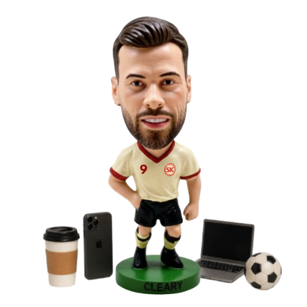
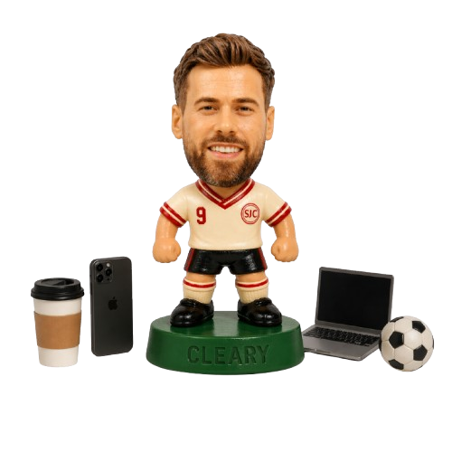

Brand marketer with 13+ years experience. Global brand marketing at adidas Football, currently a brand manager at The National Lottery in Dublin. This blog is a record of what I'm building, learning, and figuring out along the way.
Connect on LinkedIn
Brand marketer with 13+ years experience. Global brand marketing at adidas, currently at The Irish National Lottery. This is a record of what I'm building, and learning along the way.
Connect on LinkedInLatest

Previous Entries